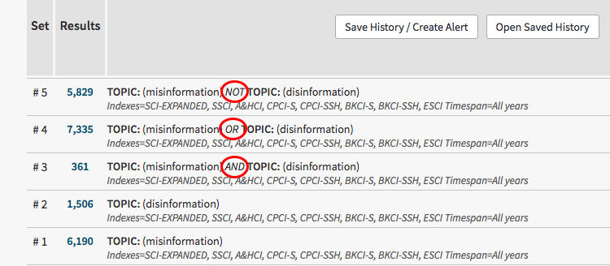
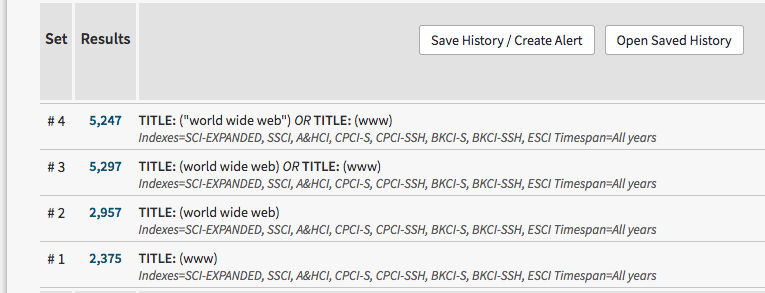
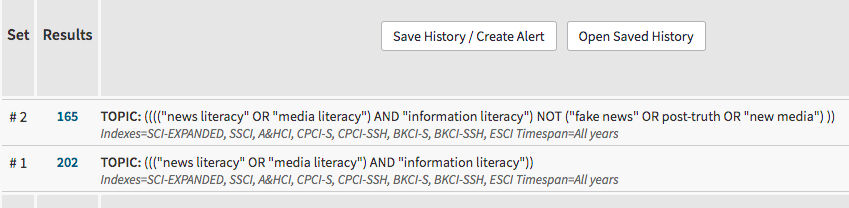
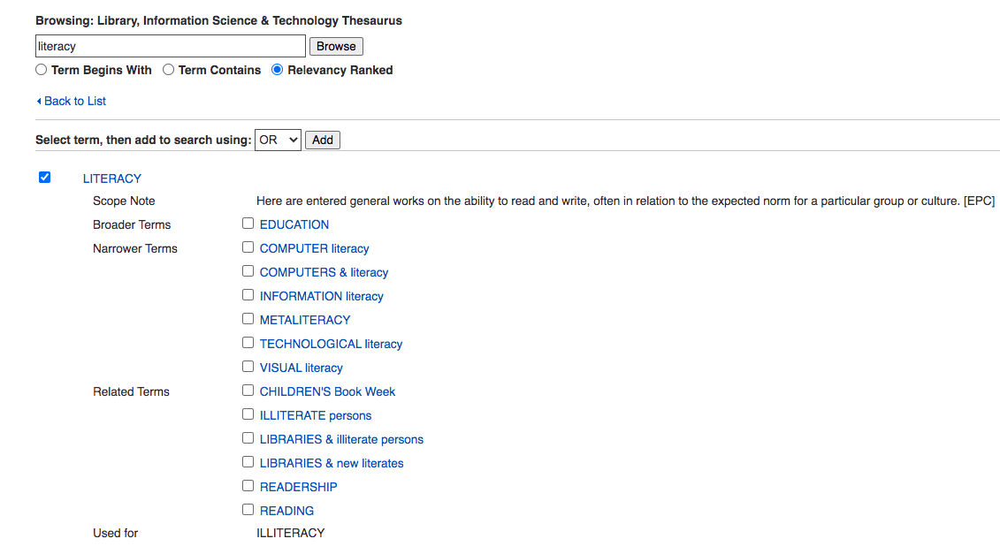

Trainees Edition
Trainers Edition
Trainees Edition
Trainers Edition
Module 14: Effective Search Strategies
Module Description
The main purpose of this module is to explain some of the search functions and operators necessary for developing an effective search strategy.
The secondary aim is to guide trainers who want to use the content of this Module to train their trainees.
In accordance with these goals, Boolean logic, controlled vocabularies, field searching, proximity searching, truncation and wildcards, limits to constraint searches, and guidelines on how to teach the subject are covered in this module.
Trainees who successfully complete this Module will be able to,
- understand why an effective search strategy is important,
- understand Boolean logic and define operators (AND, OR, NOT),
- understand importance of controlled vocabularies,
- understand field searching and define basic fields,
- define proximity operators and distinguish adjacency and nearby operators,
- understand why and how to use truncation and wildcards.
Additionally, trainers who successfully complete this module, will be able to demonstrate an understanding of the guidelines for teaching the subject.
Module Structure
This module consists of the following parts:
- Module Description (objectives, description of the content, and learning outcomes)
- Module Structure
- Guidelines for Trainees
- Guidelines for Trainers (how to prepare, methods to use, and tips for trainers)
- Content (study materials and exercises)
- Quiz
- Resources (references and recommended sources)
The main objectives of the module, the description of the content and learning outcomes are explained in the Module Description section. Content includes all study materials and content related exercises. The quiz provides multiple choice questions for trainees to test their progress. Resources have two components: references, and recommended resources for further study. References is the list of resources cited in the content section; recommended resources consist of a list of supplemental resources which are recommended reading, in order to learn more on the topic. Guidelines for Trainees includes instructions and suggestions for trainees. Guidelines for Trainers leads trainers through different phases of the training, and provides useful tips to be used when teaching the subject.
Guidelines for Trainees
Trainees are expected to read the text, and do the exercises. They may consult recommended resources for further information. After completing study of the content trainees are strongly advised to take the quiz to evaluate their progress. They can revise the study material if needed.
Guidelines for Trainers
Guidelines for Trainers includes suggestions and tips for trainers on how to use the content of this module to train people in the use of effective search strategies.
Preparation
Preparing a presentation (PowerPoint/Prezi/Canva) which is supported by visual materials and which displays the results of database/search engine searches is strongly suggested. During the course a real time demonstration is also strongly suggested.
Getting Started
A short quiz (3 to 5 questions) in Kahoot, or questions with Mentimeter can be used at the beginning for engaging participants in discussion on the topic. The quiz can also be used as a motivation tool, as well as a tool used to check trainees’ existing knowledge on the subject. Some examples for questions could be: What are Boolean operators? What are truncations? How can we use “quotation marks” for phrase searching?
Methods to Use
Various teaching methods can be used in combination with each other during the training. Such as:
- Lecturing
- Group discussion
- Individual work
- Self-reflection
Tips for Trainers
Warming-up
An effective way of involving participants and their expectations about what they will learn is to ask a few preliminary questions on the subject. For instance, trainees can be asked to conduct online searches for one or more negotiated queries. The activity can be conducted as follows:
- prepare different queries which need to apply search strategies
- select a database for each query
- ask participants to conduct online searches for these queries
- ask participants to save their search strategy and results
- ask participants to share and discuss their results with other participants
After sharing make sure that participants are able to understand that different search strategies bring different results. Trainees should understand the benefits of effective search strategies.
Presenting the Objective of the Lesson
The objective of the lesson (which is to explain effective search strategies, and understanding the impact of using these strategies on search results) should be made clear. Following the warm-up questions, it will be easier to clarify the objectives.
Presenting the Lesson Content
While presenting the content, make sure to interact with the trainees and encourage them to participate actively.
Before
- Before the lesson prepare queries for participants to practice searching (determine queries, conduct searches for these queries, and try different databases for queries)
- Before the lesson decide which sources and databases will be used for practice
During
- At the beginning of the lesson ask participants their opinion about why an effective search strategy is important
- At the beginning of the lesson ask participants what the effect of an effective search strategy is on information retrieval
- At the beginning of the lesson, ask participants to conduct searches about given queries, and save the results
Afterwards
- After explaining the topics, ask participants to conduct the same searches that were carried out at the beginning of the lesson. For example, after explaining Boolean operators, ask participants to conduct the same query, using Boolean operators
- Compare previous saved results with the new results
- Some techniques (for example truncations, wildcards etc.) can vary from database to database. Conduct the same queries in different databases
- Discuss the results with the participants
Suggestions
- Be sure to support your lessons with practical examples and exercises
Conclusion
Give a short summary of the lesson, and ask questions which would help underline the most important content and practises that you would like to emphasise. Such as:
Why are effective search strategies important?
After the discussion period, make sure that trainees understand that search strategies are very important for information retrieval, and that they give researchers a comprehensive plan for conducting their search. To be aware of effective search strategies will enable participants to satisfy information needs thoroughly and efficiently.
Content: Effective Search Strategies
Introduction
News literacy includes an understanding of the role of news in society, the motivation to seek out news, and the ability to find, identify, recognize, critically evaluate, and create news (Malik, Cortesi & Gasser, 2013, p. 8-9). To put it more generally: In order to be literate (information, news, data, finance etc.), people need to have the skills and knowledge to find information which will meet their needs.
An effective search strategy is important in order to find information relevant to research topics. In general terms, a search strategy is a comprehensive plan for meeting research goals. Before starting online search (conducting an effective search strategy) it is necessary to determine whether the query is a known-item or a subject search. A known-item search is a query for an actual (or known) source. In this kind of search one uses information describing an item such as an author’s name, a title, a publication name etc. A subject search is a query for information on a topic. “This is the most challenging type of search because you cannot specify precisely what you need and what you can safely reject” (Fulton & McGuinness, 2016, p.123). It is worth mentioning that effective search strategies are especially important and decisive for this kind of search.
After deciding on the type of query, the relevant source/database should be selected (see also Module 12). After that facet analysis and logical combination should be done. “A facet is a word or a very short phrase that describes a single concept or idea” (Markey, 2019, p.98). For example: Is there a relationship between “fake news” and “social media”; for this query the facets are: fake news and social media.
After presearch preparation an effective search strategy should be applied. In this section some of the search functions and operators necessary for developing an effective search strategy will be examined.
Boolean Logic
Boolean operators are used in most information databases and search engines, providing the ability to combine synonyms and variant concepts together to access relevant items (Alexander, 2003, p. 62).
Boolean logic refers to the logical relationship among terms in a search. AND, OR, and NOT are the basic Boolean operators. These operators expand or narrow the search.
- AND is inserted between two terms: This operator tells the search system to find sources bearing both terms,
- OR is inserted between two terms: This operator tells the search system to find sources bearing either terms,
- NOT is inserted between two terms: A and B, this operator tells the search system to exclude sources bearing the second term, B, from the first term, A (Markey, 2019, p. 100).

Example 1: Conducting a Topic Search in the Web of Science Database
Search Terms: misinformation, disinformation
Boolean Operators: AND, OR, NOT

In the above search:
# 1 will find records on the topic of misinformation
# 2 will find records on the topic of disinformation
# 3 will find records containing the topics of misinformation and disinformation
# 4 will find records containing topics on the individual search terms misinformation or disinformation; or topics on both search terms used together
# 5 will only find records containing the topic of misinformation, and will exclude records on the topic of disinformation.
Example 2: Conducting a Topic Search in the Web of Science Database
Search Terms: posttruth, post truth, post-truth
Boolean Operators: OR

In the above search:
# 1 will find records on the topic of posttruth
# 2 will find records on the topic of “post truth”
# 3 will find records on the topic of post-truth
# 4 will find records containing the individual search terms posttruth or “post truth”, or post-truth; or combinations such as “posttruth” and ”post truth”, “posttruth” and post-truth, “post truth” and post-truth; or all three search terms together in the same record.
Example 3: Conducting a Title Search in the Web of Science Database
Search Terms: www, world wide web, “world wide web”
Boolean Operators: OR

In the above search:
# 1 will find records with www in the title
# 2 will find records with world wide web in the title
# 3 will find records with both world wide web, and www together in the title; or records with only one of the search terms in the title.
# 4 will find records with both “world wide web”, and www together in the title; or records with only one of the search terms in the title.
Example 4: Conducting a Topic Search in the Web of Science Database
Search Terms: propaganda, political
Boolean Operators: NOT

In the above search:
# 1 will find records on the topic of propaganda
# 2 will find records on the topic of political
# 3 will find records on the topic of propaganda, but will exclude records on the topic of political.
Nesting
Nesting is used to organise search logic, and the order in which Boolean commands will be performed. Nesting is commonly indicated by using parentheses (Alexander, 2003, p. 62). Nesting uses parentheses to keep concepts that are alike together, and command the database to look for search terms in the parentheses first. The system processes the Boolean command by first reading the statement in the innermost parentheses, and then continuing to read outward through to the outermost parentheses.
Example 1: Topic = ((news OR media) AND literacy) NOT "new media"
In the above example the database will first find the documents news literacy OR media literacy, and exclude documents which include "new media”.
Example 2: Conducting a Topic Search in the Web of Science Database
Search Terms: news literacy, media literacy, information literacy, post-truth, fake news, new media
Boolean Operators: AND, OR, NOT, and NESTING

In the above search:
# 1 will find records on the topics news literacy and information literacy; or media literacy and information literacy
# 2 will first find records on the topics news literacy and information literacy; or media literacy and information literacy, and exclude documents which include “fake news” or post-truth, or "new media”.
Exercises
- Consider these statements. Try describing in words what the content of the documents retrieved by these statements would be. Test out the statements in one multidisciplinary database (e.g. ScienceDirect, Academic Search Ultimate)
magazines OR journals NOT books
(magazines OR journals) NOT books
(magazines OR journals) AND books
magazines OR (journals AND books)
(magazines OR (journals NOT books)) AND libraries - Choose a few terms relating to a subject that interests you, and try a number of Boolean combinations in order to search them.
Controlled Vocabularies
Databases use controlled vocabularies to index records; this is the one of the most important differences, in terms of searching, between databases and the Web (Fulton & McGuinness, 2016, p.131).
A controlled vocabulary is “an organised arrangement of words and phrases used to index content and/or to retrieve content through browsing or searching” (Harpring, 2010). In other words, a controlled vocabulary is a list of equivalent terms in the form of a synonym ring, or a list of preferred terms. It defines hierarchical relationships between terms with broader, narrower, related terms, and used for (Morville & Rosenfeld, 2007, p.194). In order to maximise search efficiency, and to retrieve related records, it is recommended that controlled vocabulary terms be used. In the case that the term chosen by the user and the term used by the system is not the same, databases provide online thesaurus/subject terms/indexes, in order to facilitate the selection of the appropriate terms or descriptors used in the system (Fulton & McGuinness, 2016, p. 132). Controlled vocabulary, also known as subject headings, a thesaurus, descriptors, or authority control (Bell, 2015, p. 33). “Thesaurus is a formal term for a particular variety of controlled vocabulary... A thesaurus may provide the list of subject headings in a hierarchical fashion, showing relationships between the terms (broader, narrower, related), and it may provide pointers to the best terms to use” (Bell, 2015, p. 48).
- Broader terms (BT) show “a hierarchical relationship between two controlled vocabulary terms in a thesaurus that expresses either a whole–part or genus–species relationship, the broader term designating the whole or the genus” (Markey, 2019, p. 367).
- Narrower terms (NT) show “a hierarchical relationship between two controlled vocabulary terms in a thesaurus that expresses either a whole–part or genus–species relationship, the narrower term designating the part or the species” (Markey, 2019, p. 373).
- Related terms (RT) show “a controlled vocabulary term in a thesaurus that is coordinate to another controlled vocabulary term. Because both terms are at the same level in the hierarchy, they are not related hierarchically. Also called an associative relationship” (Markey, 2019, p. 375).
- Used for (UF) shows “in an authority record, a list of unused synonyms for the record’s authorised name, subject, or title” (Markey, 2019, p. 379).
Example 1: Browsing the Library, Information Science & Technology Thesaurus
Term: literacy
When you enter a search term, for example, literacy in the thesaurus, you might retrieve an entry that looks something like this:

Literacy is a valid search term used to describe information items in the Library, Information Science & Technology database. Education is a broader term for literacy; computer literacy and metaliteracy are examples of narrower terms. Illiterate persons and readership are some examples of related terms. Literacy should be used instead of (Used for) illiteracy.
Advantages of controlled vocabulary are indicated by Bell (2015, p. 33-34) as follows:
- Saves you from thinking about all possible synonyms or alternative spellings of a term. For example, if clothing is assigned as the subject heading for all documents that are related with “clothing”, you don’t need to think about other related terms such as; dress, costume, outfit ect.
- The use of controlled vocabulary should make your search more complete (if the indexers are reliable/consistent about assigning subject heading for terms).
- Subject headings lists disambiguate words that have several meanings (e.g., mercury—a planet, a car, a god, or a metal?). For author names, authority control provides one way to look up an author known by more than one name (e.g., Mark Twain/Samuel Clemens).
- Provides a safe and helpful entry point into an unfamiliar subject area. Even if you know nothing about the subject, you have the assurance that the terms in the subject list are correct and appropriate. By browsing in the list and getting a sense of the terms (especially if there are “see” or “use” or “see also” references), you can often get ideas to help you develop or refine a search strategy.
Field Searching
Field searching allows the searcher to confine search terms and phrases to particular fields, providing more concise and relevant search results (Alexander, 2003, p. 62). Limiting a search to a specific field, for example to search just the “publication name” field for a particular name, may also help to reduce the search processing time of the system.
Database records use fields to designate information about sources, and describe a particular kind of data, like author, title, or summary. “When search systems index the values in fields, they keep track of the fields from which the values were extracted” (Markey, 2019, p. 112).
Field names may vary depending on the database. Some examples of field names: author, author affiliation, title, source (publication name, journal or book title), keywords, subject, topic, funding agency, year etc. Some databases use field codes, such as AU: Author; TS: Topic, in order to make a search. These codes are database specific.
Example 1: Field names and definitions from the IEEE Xplore Database
|
Field Name |
Definition |
|
Abstract |
Brief summary or statement of the contents of a journal article, conference paper, standard, book, book chapter, or course. |
|
Author Affiliation |
Institutional affiliation of authors listed in documents (university, government agency, corporation, etc.). |
|
Author Keywords |
Terms provided by the author which describe the topics or subjects of the document. |
|
Authors |
Name of the author or authors listed in the document. |
|
Document Title |
Title of an individual document (journal article, conference paper, standard, book chapter, or course). |
|
Full Text & Metadata |
Full Text refers to the text of a paper, article, standard, etc. Metadata is the detailed information that describes the full text, like author names, publish date, and DOI. |
|
Index Terms |
Combined field which allows users to search the Author Keywords, IEEE Terms, INSPEC Terms, and Mesh Terms. |
|
Publication Title |
Title of a publication (journal, conference, or book). |
Source: IEEE Xplore: Resources and Help
Example 2: Conducting a search with field names in Web of Science database
2.1. A search using field names (topic, title, author, publication name, year published, document type, and organisation-enhanced) in Web of Science database

2.2. Result of the above search in Web of Science database

Proximity Searching
Proximity searching allows you to specify that term A must appear within so many words of term B. For example, if you were trying to find something about data protection in the European Union a search strategy such as:
TS = "European Union" AND "data protection"
will certainly bring relevant results but also, possibly, many irrelevant results, because search terms can occur anywhere in a retrieved document. For example:

Most of the database systems allow one to set up a more sophisticated search, in which one sets a rule for the relationship between search terms. That is, one can state how close to each other, and sometimes in what order search terms must appear in the text to qualify for retrieval. This is known as proximity searching (Bell, 2015, p. 49). Proximity searching helps achieve greater precision in retrieved documents.
A proximity search uses special operators which are called proximity operators.
Proximity Operators
According to the Markey (2019, p. 375) a proximity operator is an operator in a search system that specifies two criteria:
- How close the words should occur in the text
- Whether word order matters
Proximity operators help to narrow or broaden a search, and improve search results. For example: A “fake news” NEAR3 “false information” search in a database, or a “fake news” AROUND (3) “false information” would retrieve more specific results than a “fake news” AND “false information”.
Unfortunately the names of the operators and syntax vary from system to system.
Some examples are:
-
WITHIN → Wn
misinformation W2 social media
This means that misinformation must appear within two words of social media to be retrieved. In response to this search, for example EBSCOhost database will return results such as:
…misinformation sharing on social media…
…misinformation on social media...
-
PRE → Pre/n or P/n
"European Union" PRE/5 framework
This means that the search term European Union must come first, and must precede framework by no more than five words. For example, in response to this search ProQuest database will return results such as:
...in the European Union Legal Framework...
...European Union and Turkey in the Framework of...
...European Union Common Agricultural Policy under WTO Framework...
-
NEAR → Near/n or N/n or Nn
disadvantaged NEAR/5 children
This means that disadvantaged and children must occur within no more than five words of each other, regardless of word order. In response to this search, for example, IEEE Xplore database will return results such as:
...school for children from disadvantaged circumstances
...disadvantaged primary school children...
...disadvantaged, preschool, gifted children…
...children from among culturally different/educationally disadvantaged...
Example 1: Conducting a Topic Search in the Web of Science Database
Search Terms: “fake news”, “false information”
Proximity Operators: NEAR

In the above search:
# 2 will find records with “fake news” and “false information” which must occur within no more than three words of each other, regardless of word order.
Example 2: Conducting a Search in Google
Search Terms: “fake news”, “false information”
Proximity Operators: AROUND

Some databases and sources used the terms adjacency and nearby operators in lieu of the term proximity operator. The difference between adjacency and nearby operators is word order.
Adjacency operators specify that search words must be adjacent to each other, and word order matters (Markey, 2019, p. 365). Within (W), Pre, and ~ can be given as examples of adjacency operators.
An example search for results that would match “bandwagon effect” or “bandwagon worker effect”, but not match “effect of bandwagon” would be:
EBSCOhost: bandwagon W2 effect
ProQuest: bandwagon PRE/2 effect
Taylor & Francis Online: “bandwagon effect” ~2
Nearby operators specify that search words are separated by one or more intervening word(s), and that the order of the search words does not matter (Markey, 2019, p. 373). NEAR, N, and ~ can be given as examples of nearby operators.
An example search for results that would match “European Union general data protection”, “data protection in the European Union”, “European Union developments on data protection” would be:
EBSCOhost: “data protection” N2 “European Union”
ProQuest: bandwagon NEAR/2 effect
Taylor & Francis Online: "data protection" "european union"~2
Phrase Searching
Phrase searching is denoted by enclosing the terms you wish to search as an exact phrase (e.g., “digital literacy”) between quotation marks. Phrase searching allows you to ensure that your search terms will appear as an exact match in the search results. This approach helps to narrow a search, excluding results in which both terms appear, but not directly together as an exact match (Fulton and McGuinness, 2016, p. 136). Many databases (EBSCO, WoS, JSTOR ect.) and search engines such as Google, Bing, or others, all follow the convention of enclosing the terms to be searched as an exact phrase within double quotation marks (Bell, 2015, p. 53).
- In some databases, such as ScienceDirect or Scopus, punctuation is ignored in a phrase search. For example a phrase search such as:
”heart-attack” and “heart attack”
will return the same results.
- In some databases, such as Scopus, to search for an exact match braces {} should be used. For example, an exact match search using braces, such as:
“heart attack” and {heart attack}
will not return the same results. Because “heart attack” will return “heart attacks” too, but {heart attack} will not return “heart attacks”.
Truncation and Wildcards
Truncations
Truncation is an effective way of extending a search by searching for variants of the same term, such as plural forms. Truncation allows searching with a word stem, which allows retrieval of any word beginning with those letters (Bell, 2015, p. 54). To conduct such a search truncation symbols, such as *, ?, $ are added to the stem of a word.
For example:
- to retrieve documents containing the terms library, libraries, librarian, and librarianship an asterisk (*) is added to the words stem librar*
- to retrieve documents containing information behaviour, information behaviour, informational behaviour, informational behaviour, information-behaviour, informativeness behaviour an asterisk (*) is added to the words stem informa* beha*
It is important to be aware that truncation symbols can vary according to the database or search engine (Fulton and McGuinness, 2016, p. 137). The most frequently used are:
- *
- ?
- !
-$
When the stem is a word in its own right, that word will be included in the search results (Bell, 2015, p. 54). For example:
-
journal* retrieves records containing the words journal, journals, journalism, journalist, journalists, journalists’, journalistic, journaling
Truncating words excessively can result in low specificity. For example,
- cat* retrieves records cat, catalyst, catalogues, catastrophic, etc. If the search term is cat (the mammal), a query like cat, or cats will bring more accurate results.
In some databases plurals and spelling variants are included automatically. For example, in ScienceDirect database:
“color code” or “colour code” or “colour codes”
will return the same results.
Wildcards
Wildcards work in a way similar to truncation. A symbol, such as *, ?, !, is used to search for terms that can be spelled in different ways. They are useful for searching for terms which use both American and United Kingdom spellings (such as licence and license). A symbol is usually inserted within the word to replace a single letter (Fulton and McGuinness, 2016, p. 13).
For example,
- the use of “?” (wildcard) → licen?e returns the results → licenCe, licenSe
You can use “?” (wildcard) to retrieve the singular and plural forms of some words, for example, woman, as well as women:
- wom?n → womAn, womEn
Wildcards are most frequently used to replace just one letter (Bell, 2015, p. 56), but in some databases they can be used for a “zero-to-one” character, or any group of characters which also include no character.
For example, using wildcards in Web of Science database:
- The asterisk (*) represents any group of characters, including no character.
f*food → fastfood, futurefood, frankenfood, fishfood, fitfood
- The question mark (?) represents any single character.
organi?e → organiSe, organiZe
- The dollar sign ($) represents zero or one character.
colo$r → color, coloUr
Wildcards can be combined in a search term. For example,
-
organi?ation* → organisation, organization, organizations, organizational
Notes
1- Note that the symbols used for wildcards are the same as those used for truncation, but the effect changes, depending on the database. For example, one database may use “!” for truncation and “*” for a wildcard, while another exactly reverses those two meanings (Bell, 2015, p. 56).
2- Note that in some databases there is no difference between wildcards and truncations. For example to use “*” as a wildcard in Scopus database,
criminal* liab*
will return results such as criminally liable and criminal liability.
3- Note that in some databases plurals and spelling variants are included automatically. For example,
heart attack
will return results which include heart attacks
anesthesia
will return results which include anaesthesia
4- Note that in some databases using the singular form of a term retrieves singular, plural, and possessive forms of most terms. For example,
criterion
finds criteria and criterion
5- Note that in some databases when a hyphen (-) is placed between a wildcard and a word, the wildcard is dropped. For example,
*-art will be searched as art
art-* will be searched as art
(Scopus, 2021).
Refining Searches
Almost all databases and search engines allow users to select options to limit, or narrow search results.
For example; publication years, article/document type (e.g. review articles, research articles, book chapter), source type (e.g. journal, book), publication title, author, subject areas (neuroscience, psychology ect.), keyword, access type (e.g. open access), affiliation (e.g. University of Iowa), and language (e.g. Spanish)
These are some of the limiters used to refine search results or to limit search results.
Example 1: Example of “refine results” from Web of Science database:

Quiz
References
Alexander, J.O. (2003). Library Applications. H. Bidgoli (Ed.), In Encyclopedia of Information Systems, (p. 57-76). Elsevier.
Bates, M.J. (1979). Information Search Tactics. Journal of the American Society for Information Science, 30, 205-214.
Bell, S.S. (2015). Librarian’s Guide to Online Searching: Cultivating Database Skills for Research and Instruction. California: Libraries Unlimited.
EBSCO Connect (2018). Searching with Boolean Operators. Retrieved from https://connect.ebsco.com/s/article/Searching-with-Boolean-Operators?language=en_US
Fulton, C. and McGuinness, C. (2016). Digital Detectives: Solving Information Dilemmas in an Online World. Amsterdam: Chandos Publishing.
Harpring, P. (2010). Introduction to controlled vocabularies: Terminology for art, architecture, and other cultural works. J. Paul Getty Trust. Retrieved from http://www.getty.edu/research/publications/electronic_publications/intro_controlled_vocab/index.html
IEEE Xplore: Resources and Help. (2021). Retrieved from https://ieeexplore.ieee.org/Xplorehelp/searching-ieee-xplore/command-search#summary-of-data-fields
Malik, M., Cortesi, S.C., and Gasser, U. (October 18, 2013). The Challenges of Defining 'News Literacy'. Berkman Center Research Publication No. 2013-20, DOI: http://dx.doi.org/10.2139/ssrn.2342313
Markey, K. (2019). Online Searching: A Guide to Finding Quality Information Efficiently and Effectively (2nd edition). Lanham: Rowman & Littlefield.
Morville, P. and Rosenfeld, L. (2007). Information Architecture for the World Wide Web. Farnham: O'Reilly.
Scopus: Access and use Support Center. (2021). Retrieved from https://service.elsevier.com/app/answers/detail/a_id/11213/c/10545/supporthub/scopus/
Recommended Sources
Brown, C.C. (2021). Librarian's Guide to Online Searching: Cultivating Database Skills for Research and Instruction (6th Edition). Libraries Unlimited.
Dotto, C. & Smith, R. (October 2019). First Draft's Essential Guide to: Newsgathering and Monitoring on the Social Web. Retrieved from https://firstdraftnews.org/wp-content/uploads/2019/10/Newsgathering_and_Monitoring_Digital_AW3.pdf?x35395
Li, L. (2014). Scholarly information discovery in the networked academic learning environment. Oxfordshire, [England] : Chandos Publishing.
Mann, T. (2015). The Oxford Guide to Library Research (4th ed.). Oxford University Press.
Recommended Videos
Boucher, A., Riesen, K., & Simpson, L. Basic Search Strategies for Systematic Reviews.